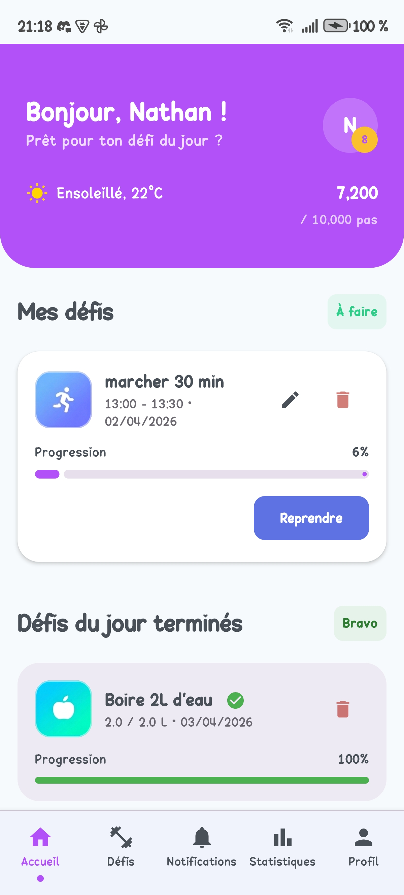
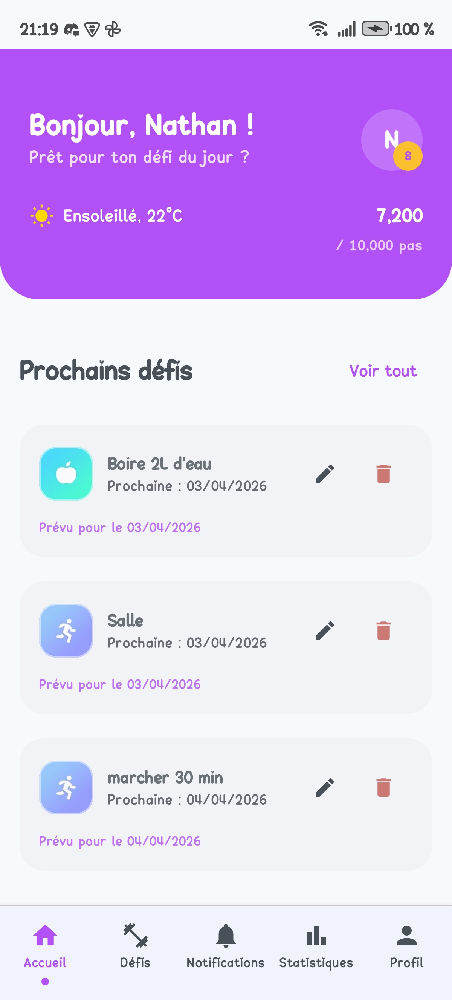
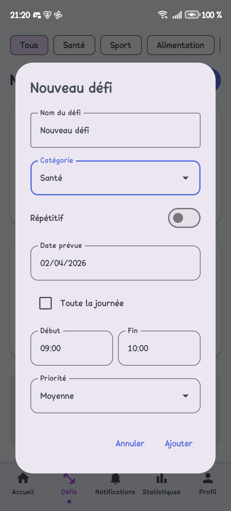
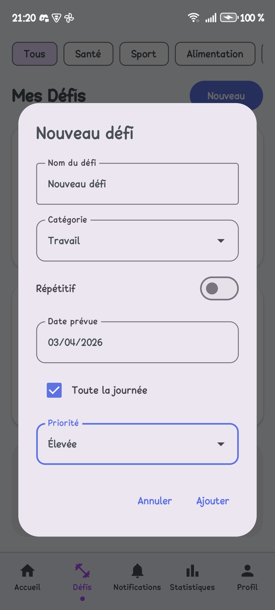
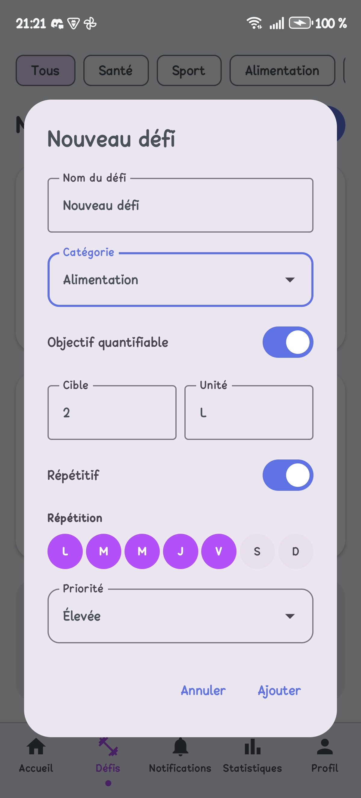
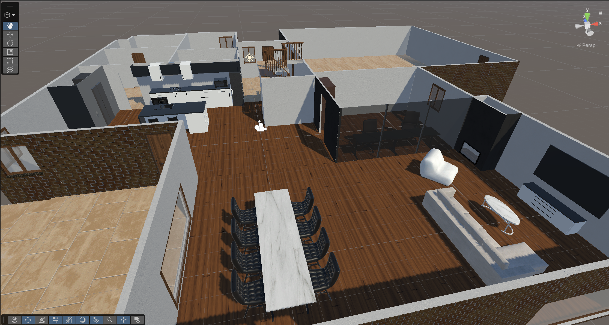
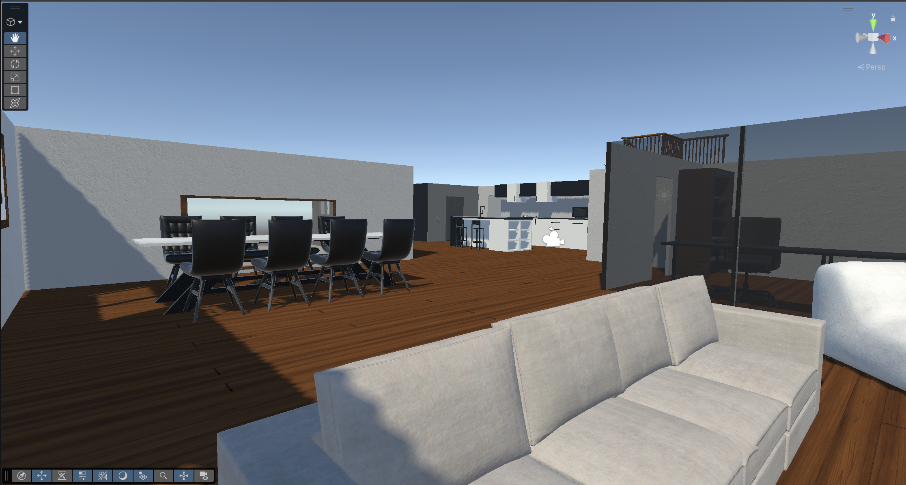
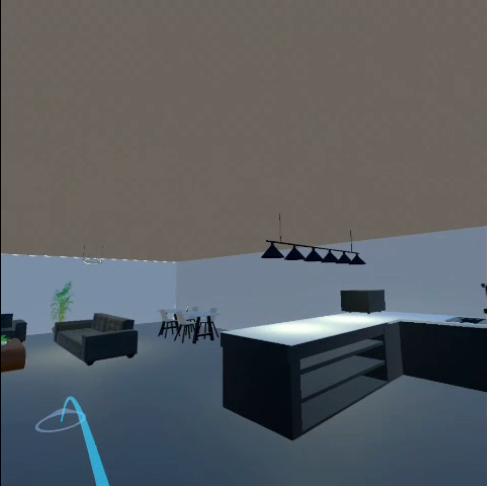
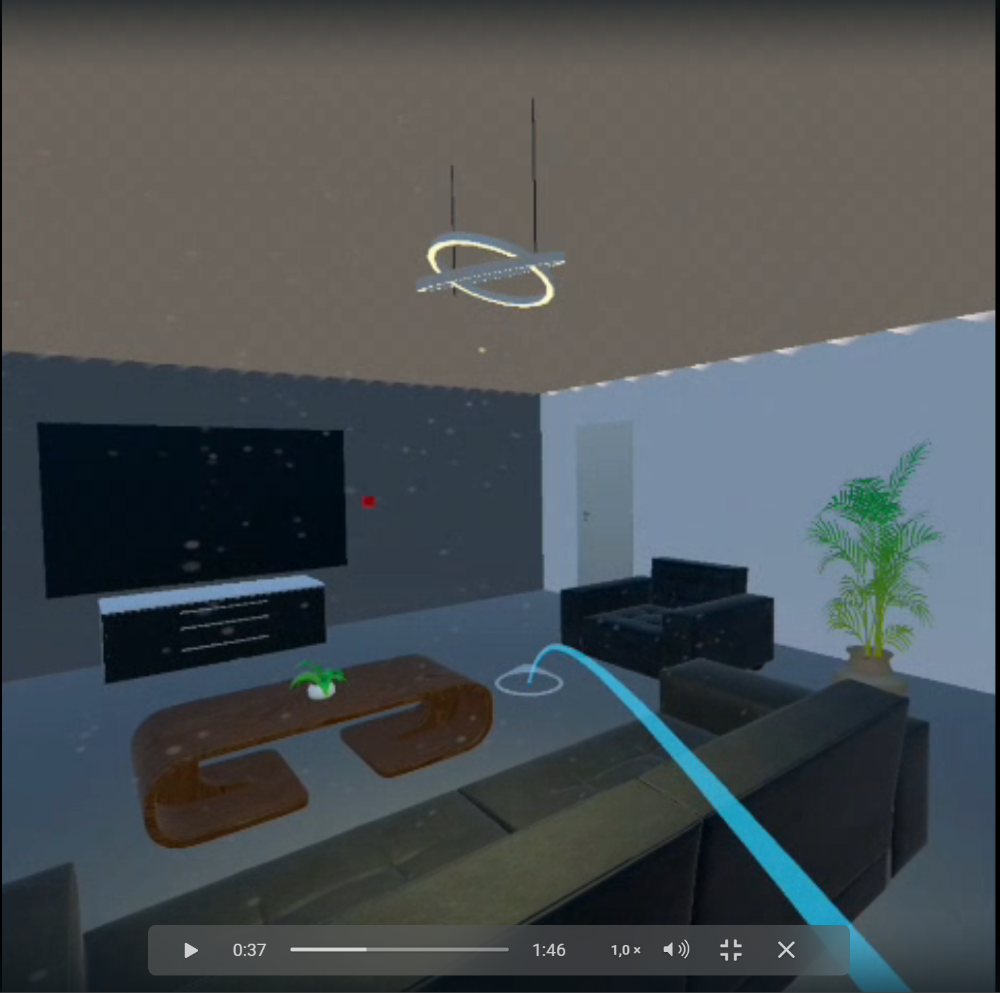
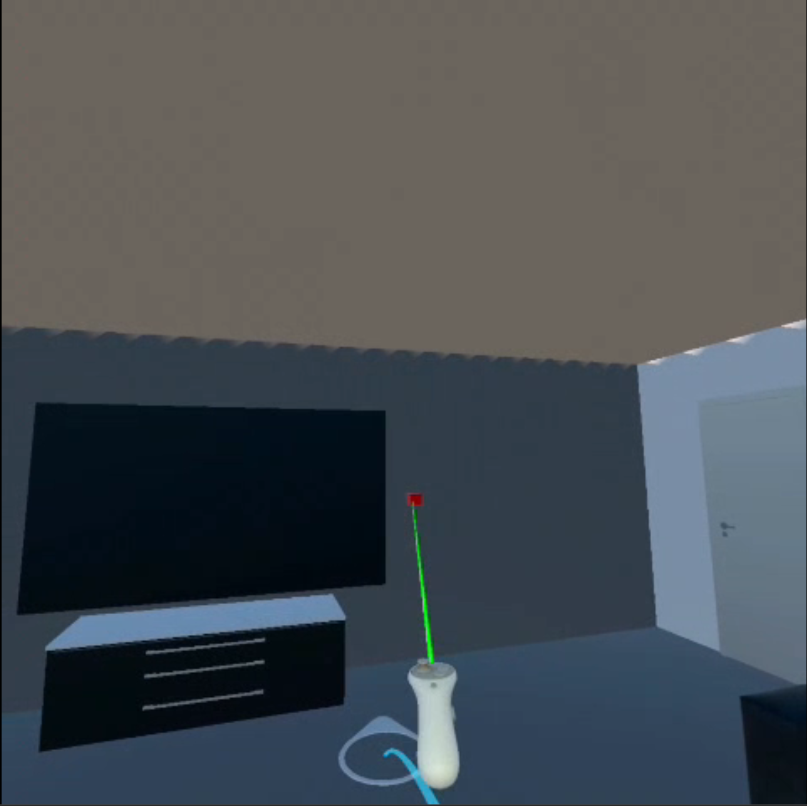

Un aperçu de mes réalisations académiques et personnelles, avec des projets orientés développement mobile, base de données, game design et expériences immersives.
5 projets affichés
Cartographie forestière du Livradois-Forez
Ce projet vise à fournir une cartographie des arbres pour l'association du Livradois-Forez. L'application permet de consulter les informations liées aux espèces et aux maladies, puis d'ajouter, modifier ou supprimer des entrées selon les besoins du suivi terrain.
Le travail d'équipe a abouti à plusieurs livrables complémentaires : une application mobile en Kotlin, une application web en PHP, une application d'administration en Blazor et une API pour relier l'ensemble.
J'ai principalement travaillé sur le système de connexion des comptes côté PHP ainsi que sur la gestion des données relatives aux arbres en EF. Ma contribution a été interrompue en cours de projet en raison de mon départ pour le semestre au Canada.
Application mobile Android développée en Kotlin en équipe de deux pour aider à organiser des routines sportives et garder une pratique régulière.
L'objectif est de proposer un suivi simple des séances, des exercices et des habitudes hebdomadaires dans une interface claire pensée pour un usage quotidien.
À plus long terme, l'application sera reliée à une API météo afin de suggérer un défi du jour adapté aux conditions extérieures, proposera un système de statistiques et permettra de personnaliser les défis du jour en fonction des préférences de l'utilisateur.
Technologies utilisées : Kotlin, Android Studio, XML, API météo (prévue).

Vue d’ensemble des défis

Défis à venir

Création d’un défi ponctuel

Création d’un défi sur une journée

Création d’un défi récurrent
Black Out - Expérience immersive en réalité virtuelle
Black Out est un projet réalisé en groupe de 5 sous Unity3D, pensé comme une expérience immersive en réalité virtuelle.
Le joueur est plongé dans une maison privée de courant et doit rétablir l'électricité en retrouvant la clé de la pièce où se trouve le panneau électrique.
Le jeu s'appuie sur la paréidolie et l'audition pour renforcer la tension, troubler la perception et accentuer l'immersion tout au long de l'exploration.
Technologies utilisées : Unity3D.

Décor et ambiance - vue 1

Décor et ambiance - vue 2
Téléportation et interactionsÉvénements scénarisés
Station météo VR connectée à une API
Projet réalisé sous Unity avec une logique orientée prototype fonctionnel : l'objectif principal était de récupérer des données météo via une API puis de les afficher dans un environnement VR.
La partie visuelle était volontairement secondaire. L'information météo devait surtout être lisible et visible dans la scène, notamment sur une télévision placée dans un salon virtuel.
Le résultat final permet d'afficher dynamiquement les données météo dans l'univers 3D et de valider l'intégration bout en bout entre Unity et l'API.
Technologies utilisées : Unity3D, API météo (requêtes HTTP/JSON).

Vue générale du salon VR

Affichage météo sur la télévision

Variation des informations météoPrototype final intégré à la scène
Projet de conception de jeu vidéo
Projet solo de conception de jeu vidéo autour de Yume no Fukushuu, pensé comme une expérience d'action-aventure sur PC et consoles.
L'objectif était d'imaginer un concept complet et de le formaliser dans un one-pager clair. Le projet comprend également tout un lore original, plus détaillé que ce qui est présenté dans le document de synthèse.
Le concept intègre 5 boss principaux et met l'accent sur la cohérence entre narration, univers et intentions de gameplay.